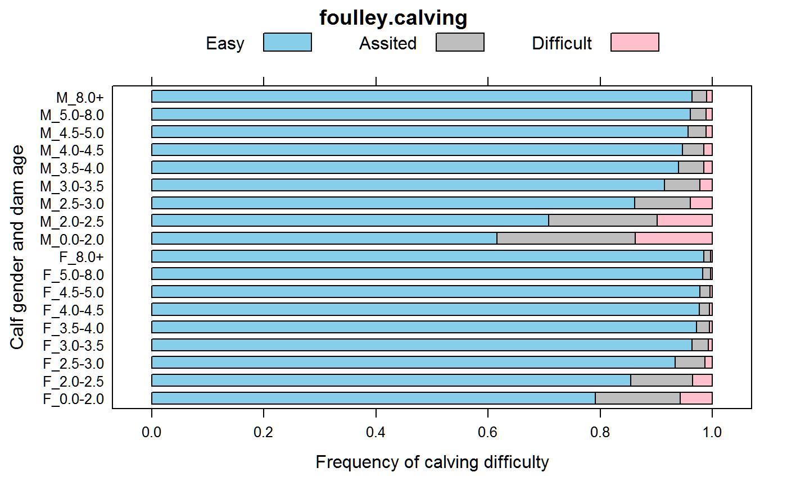

foulley.calving.RdCalving difficulty by calf sex and age of dam
data("foulley.calving")
A data frame with 54 observations on the following 4 variables.
sexcalf gender
agedam age factor, 9 levels
scorescore for birthing difficulty, S1 < S2 < S3
countcount of births for each category
These data are calving difficulty scores for purebred US Simmental cows.
The raw data show that the greatest calving difficulty is for young dams with male calves. Differences between male/female calves decreased with age of the dam.
The goodness of fit can be improved by using a scaling effect for age of dam.
Note: The paper by Foulley and Gianola has '21943' as the count for score 1, F, >8. This data uses '20943' so that the marginal totals from this data match the marginal totals given in the paper.
Used with permission of Jean-Louis Foulley.
JL Foulley, D Gianola (1996). Statistical Analysis of Ordered Categorical Data via a Structured Heteroskedastic Threshold Model. Genet Sel Evol, 28, 249--273. https://doi.org/10.1051/gse:19960304
# \dontrun{ library(agridat) data(foulley.calving) dat <- foulley.calving ## Plot d2 <- transform(dat, age=ordered(age, levels=c("0.0-2.0","2.0-2.5","2.5-3.0", "3.0-3.5","3.5-4.0", "4.0-4.5","4.5-5.0","5.0-8.0","8.0+")), score=ordered(score, levels=c('S1','S2','S3'))) libs(reshape2) d2 <- acast(dat, sex+age~score, value.var='count') d2 <- prop.table(d2, margin=1) libs(lattice) thm <- simpleTheme(col=c('skyblue','gray','pink')) barchart(d2, par.settings=thm, main="foulley.calving", xlab="Frequency of calving difficulty", ylab="Calf gender and dam age", auto.key=list(columns=3, text=c("Easy","Assited","Difficult")))#> #>#> #> #>#> #> #>#> #> #>#> formula: score ~ sex * age #> data: dat #> #> link threshold nobs logLik AIC niter max.grad cond.H #> probit flexible 363759 -108088.45 216214.90 7(0) 5.12e-12 6.0e+02 #> #> Coefficients: #> Estimate Std. Error z value Pr(>|z|) #> sexM 0.500605 0.015178 32.982 < 2e-16 *** #> age2.0-2.5 -0.237643 0.013846 -17.163 < 2e-16 *** #> age2.5-3.0 -0.681648 0.018894 -36.077 < 2e-16 *** #> age3.0-3.5 -0.957138 0.018322 -52.241 < 2e-16 *** #> age3.5-4.0 -1.082520 0.024356 -44.446 < 2e-16 *** #> age4.0-4.5 -1.146834 0.022496 -50.981 < 2e-16 *** #> age4.5-5.0 -1.175312 0.028257 -41.594 < 2e-16 *** #> age5.0-8.0 -1.280587 0.016948 -75.559 < 2e-16 *** #> age8.0+ -1.323749 0.024079 -54.974 < 2e-16 *** #> sexM:age2.0-2.5 0.003035 0.019333 0.157 0.87527 #> sexM:age2.5-3.0 -0.076677 0.026106 -2.937 0.00331 ** #> sexM:age3.0-3.5 -0.080657 0.024635 -3.274 0.00106 ** #> sexM:age3.5-4.0 -0.135774 0.032927 -4.124 3.73e-05 *** #> sexM:age4.0-4.5 -0.124303 0.029819 -4.169 3.07e-05 *** #> sexM:age4.5-5.0 -0.198897 0.038309 -5.192 2.08e-07 *** #> sexM:age5.0-8.0 -0.135524 0.022804 -5.943 2.80e-09 *** #> sexM:age8.0+ -0.131033 0.031852 -4.114 3.89e-05 *** #> --- #> Signif. codes: 0 '***' 0.001 '**' 0.01 '*' 0.05 '.' 0.1 ' ' 1 #> #> Threshold coefficients: #> Estimate Std. Error z value #> S1|S2 0.82504 0.01083 76.15 #> S2|S3 1.52017 0.01138 133.62## Coefficients: ## Estimate Std. Error z value Pr(>|z|) ## sexM 0.500605 0.015178 32.982 < 2e-16 *** ## age2.0-2.5 -0.237643 0.013846 -17.163 < 2e-16 *** ## age2.5-3.0 -0.681648 0.018894 -36.077 < 2e-16 *** ## age3.0-3.5 -0.957138 0.018322 -52.241 < 2e-16 *** ## age3.5-4.0 -1.082520 0.024356 -44.446 < 2e-16 *** ## age4.0-4.5 -1.146834 0.022496 -50.981 < 2e-16 *** ## age4.5-5.0 -1.175312 0.028257 -41.594 < 2e-16 *** ## age5.0-8.0 -1.280587 0.016948 -75.559 < 2e-16 *** ## age8.0+ -1.323749 0.024079 -54.974 < 2e-16 *** ## sexM:age2.0-2.5 0.003035 0.019333 0.157 0.87527 ## sexM:age2.5-3.0 -0.076677 0.026106 -2.937 0.00331 ** ## sexM:age3.0-3.5 -0.080657 0.024635 -3.274 0.00106 ** ## sexM:age3.5-4.0 -0.135774 0.032927 -4.124 3.73e-05 *** ## sexM:age4.0-4.5 -0.124303 0.029819 -4.169 3.07e-05 *** ## sexM:age4.5-5.0 -0.198897 0.038309 -5.192 2.08e-07 *** ## sexM:age5.0-8.0 -0.135524 0.022804 -5.943 2.80e-09 *** ## sexM:age8.0+ -0.131033 0.031852 -4.114 3.89e-05 *** ## --- ## Signif. codes: 0 '***' 0.001 '**' 0.01 '*' 0.05 '.' 0.1 ' ' 1 ## Threshold coefficients: ## Estimate Std. Error z value ## S1|S2 0.82504 0.01083 76.15 ## S2|S3 1.52017 0.01138 133.62 ## Note 1.52017 - 0.82504 = 0.695 matches Foulley's '2-3' threshold estimate predict(m2) # probability of each category#> $fit #> [1] 0.627195037 0.711933503 0.860542204 0.913436999 0.938551496 0.944707720 #> [7] 0.955306699 0.959118319 0.962397773 0.218838605 0.183177857 0.101747212 #> [13] 0.066737379 0.048833512 0.044302103 0.036355388 0.033449788 0.030928311 #> [19] 0.153966358 0.104888640 0.037710585 0.019825622 0.012614993 0.010990177 #> [25] 0.008337912 0.007431893 0.006673917 0.795325167 0.856036899 0.934054457 #> [31] 0.962639751 0.971775863 0.975687944 0.977268784 0.982381571 0.984174388 #> [37] 0.140441286 0.104573858 0.052106611 0.030741447 0.023599423 0.020485574 #> [43] 0.019216920 0.015069324 0.013597527 0.064233547 0.039389243 0.013838932 #> [49] 0.006618802 0.004624713 0.003826482 0.003514297 0.002549106 0.002228085 #># }